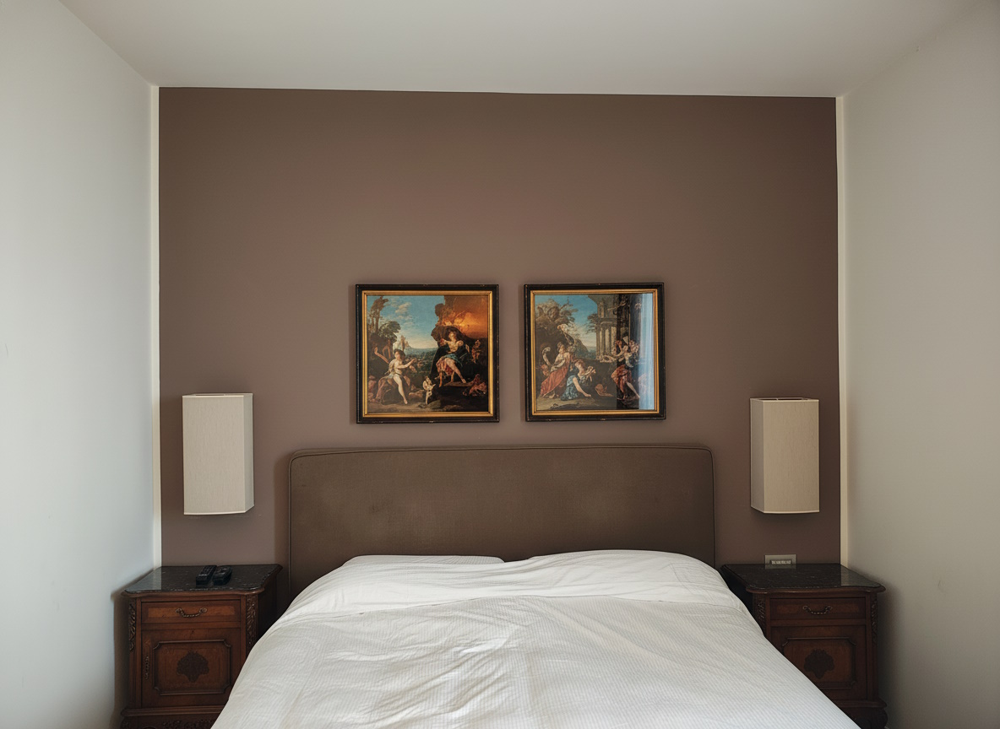
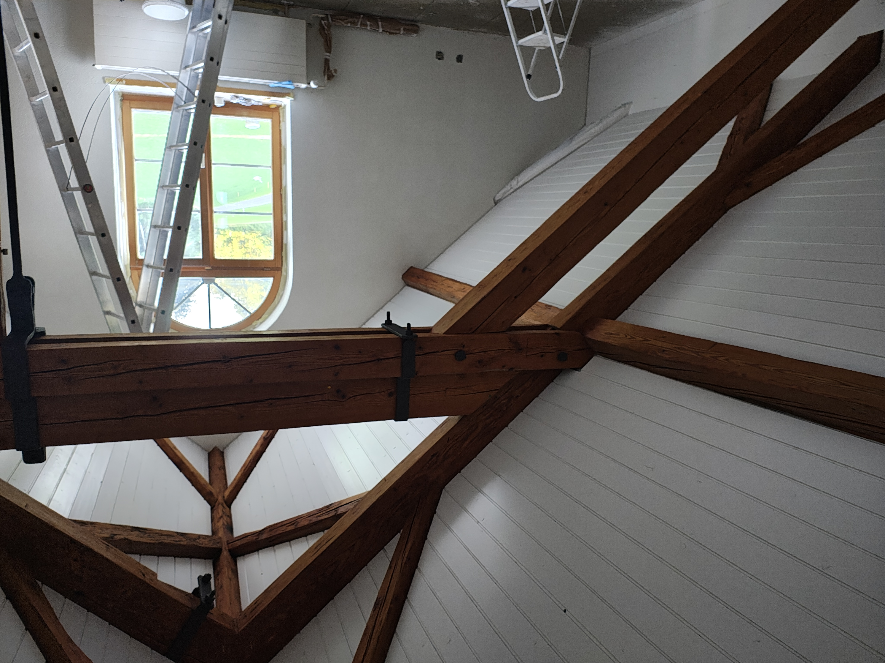
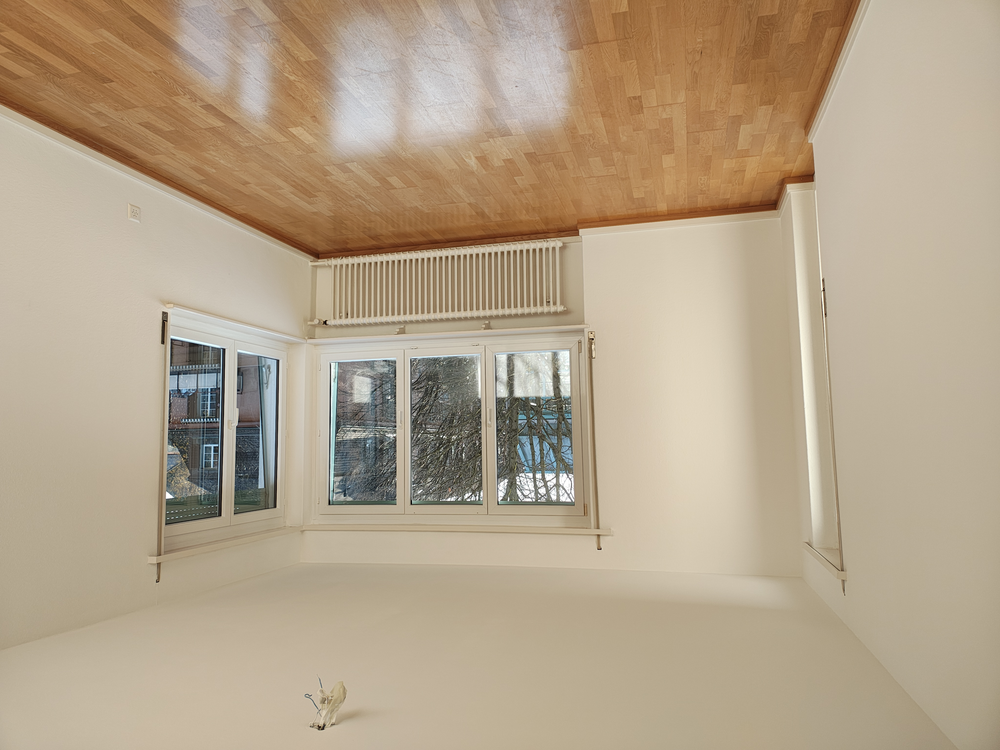
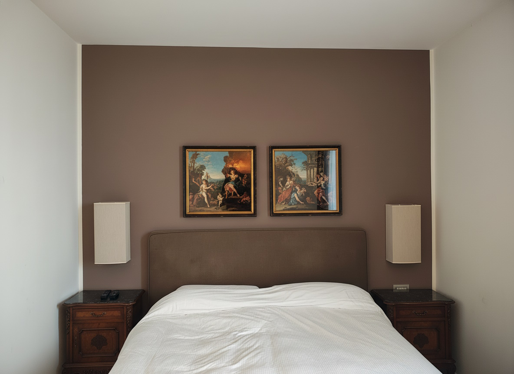
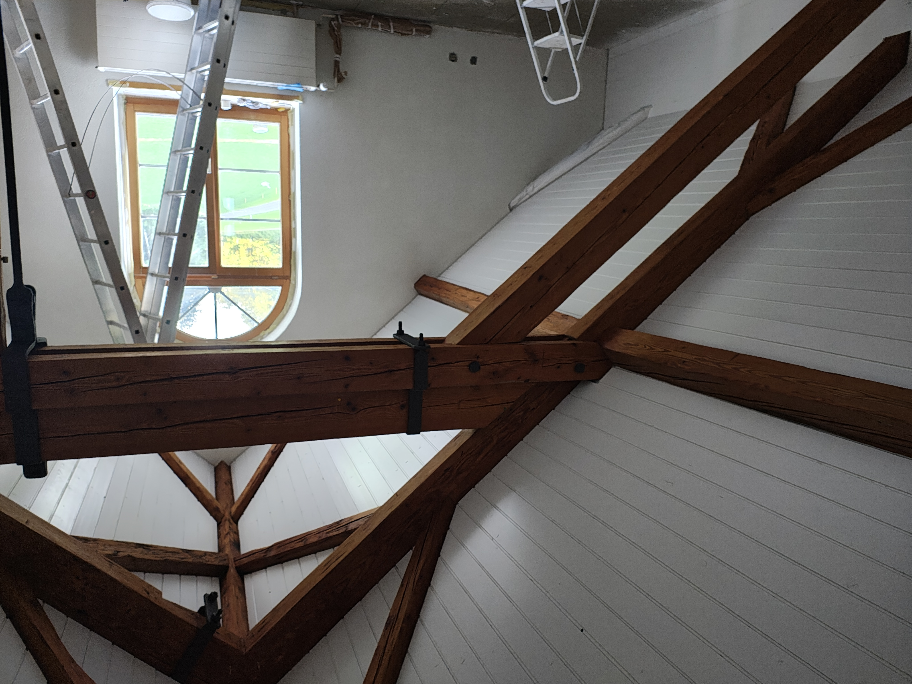
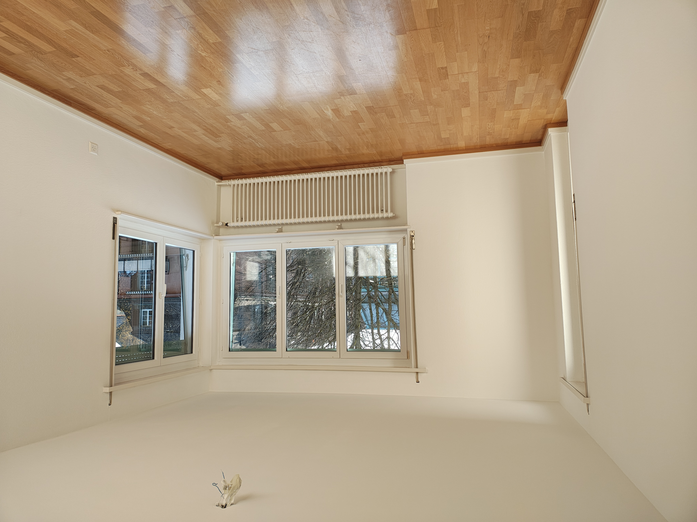

Innen- & Aussenmalerei, Lackier- & Holzarbeiten
Wir führen Malerarbeiten in Wohnungen, Häusern und Geschäftsräumen in Zürich und Umgebung aus: Anstriche von Wänden und Decken, Türen, Fenstern, Heizkörpern, Holzverkleidungen, Möbeln und Metallkonstruktionen. Wichtig ist uns eine sorgfältige Vorbereitung der Untergründe, damit die Beschichtungen lange halten und sauber aussehen – auch dann, wenn die Räume während der Arbeiten weiter bewohnt oder genutzt werden.
Je nach Aufgabe arbeiten wir mit Dispersionsfarben, Grundierungen, Email- und Acryllacken, 1K- und 2K-Lacksystemen, Ölen und Lasuren. Auf Wunsch verwenden wir geruchsarme, lösemittelfreie oder besonders ökologische Produkte, zum Beispiel für Schlafzimmer, Kinderzimmer oder sensible Bereiche.
Die Ausführung kann klassisch mit Rolle und Pinsel oder professionell mit Spritzgeräten (Kompressor, elektrisch oder Airless) erfolgen – ideal für Türen, Fenster, Möbel, Heizkörper oder grössere Flächen. Zusätzlich übernehmen wir Spachtel- und Ausbesserungsarbeiten, kleinere Gipserarbeiten sowie die Restaurierung und Auffrischung älterer Oberflächen und Zierelemente.
Wenn Sie eine Wohnung auffrischen, einen Farbwechsel planen oder einzelne Bauteile lackieren lassen möchten, beraten wir Sie gerne und erstellen ein faires Angebot.
Bilder zu Malerarbeiten
 





Malerarbeiten oder Renovation in Zürich geplant?
Ob einzelne Wand, komplette Wohnung, Türen, Fenster, Möbel oder Metallkonstruktionen –
wir unterstützen Sie bei Innen- und Aussenmalerei im Kanton Zürich und in der Schweiz.
Wir übernehmen Vorbereitung, Materialwahl und die passende Applikationsmethode
(Rolle, Pinsel oder Spritzarbeiten).
Sie erreichen uns über das Kontaktformular,
per E-Mail, via
WhatsApp
oder telefonisch unter +41 79 846 78 31.
Senden Sie uns gerne Fotos der bestehenden Oberfläche – so können wir Ihnen schnell
eine Einschätzung und einen Preisvorschlag machen.